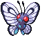

-
Bulbasaur #001

- Grama
- Veneno
Há uma semente de planta em suas costas desde o dia que este Pókemon nasce. A semente cresce lentamente.
-
Ivysaur #002

- Grama
- Veneno
Quando o bulbo em suas costas cresce, parece perder a capacidade de ficar de pé em suas patas traseiras.
-
Venusaur #003

- Grama
- Veneno
Sua planta floresce quando está absorvendo energia solar. Ele permanece em movimento para buscar a luz solar.
-
Charmander #004

- Fogo
Tem preferência por coisas quentes. Quando chove, diz-se que o vapor jorra da ponta de sua cauda.
-
Charmeleon #005

- Fogo
Tem uma natureza bárbara. Na batalha, ele chicoteia sua cauda ardente e corta com garras afiadas.
-
Charizard #006

- Fogo
Ele cospe fogo que é quente o suficiente para derreter pedregulhos. Pode causar incêndios florestais soprando chamas.
-
Squirtle #007

- Água
Quando ele retrai seu longo pescoço em sua concha, ele esguicha água com força vigorosa.
-
Wartortle #008

- Água
É reconhecido como um símbolo de longevidade. Se sua concha tem algas, esse Wartortle é muito antigo.
-
Blastoise #009

- Água
Ele esmaga seu inimigo sob seu corpo pesado para causar desmaios. Em uma pitada, ele se retirará dentro de sua concha.
-
Caterpie #010

- Inseto
Para proteção, ele libera um fedor horrível da antena em sua cabeça para afastar os inimigos.
-
Metapod #011

- Inseto
Está esperando o momento de evoluir. Nesta fase, só pode endurecer, por isso permanece imóvel para evitar o ataque.
-
Butterfree #012
- Inseto
Em batalha, ele bate as asas em grande velocidade para liberar poeira altamente tóxica no ar.
-
Pidgey #013

- Normal
Muito dócil. Se atacado, muitas vezes chuta areia para se proteger, em vez de revidar.
-
Pidgeotto #014

- Normal
Este Pokémon está cheio de vitalidade. Ele voa constantemente em torno de seu grande território em busca de presas.
-
Pidgeot #015

- Normal
Este Pokémon voa na velocidade de Mach 2, buscando presas. Suas grandes garras são temidas como armas perversas.